Steven George Baltyde — photographe & vidéaste en Alsace
Sport, marques, événements et lieux. Je capte l'instant qui compte, celui qu'on ne rejoue pas.
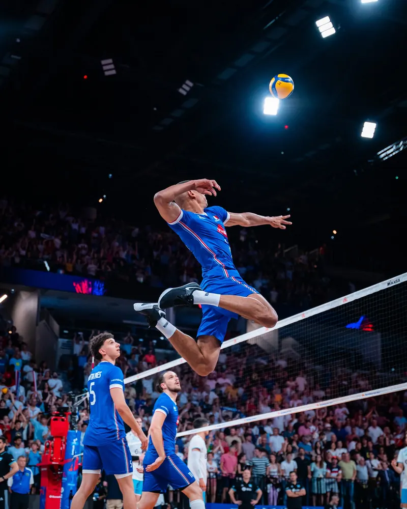
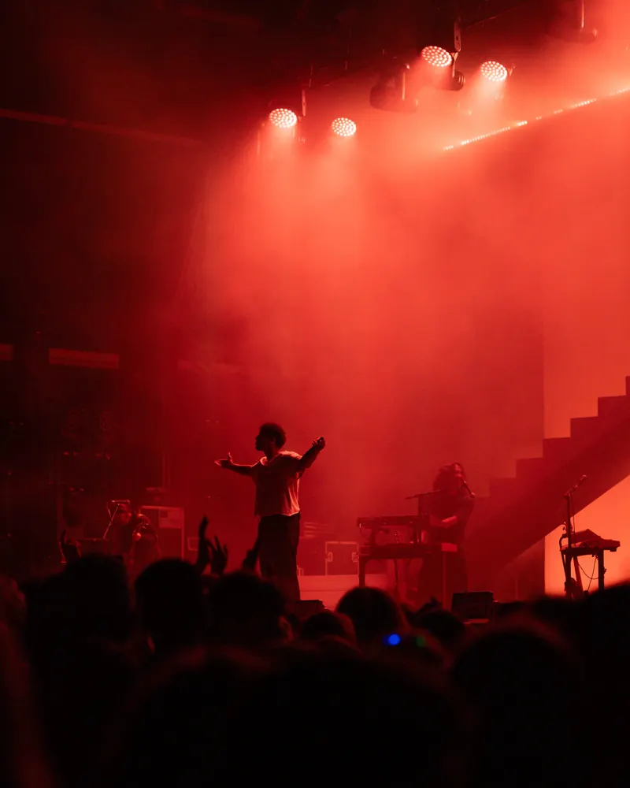
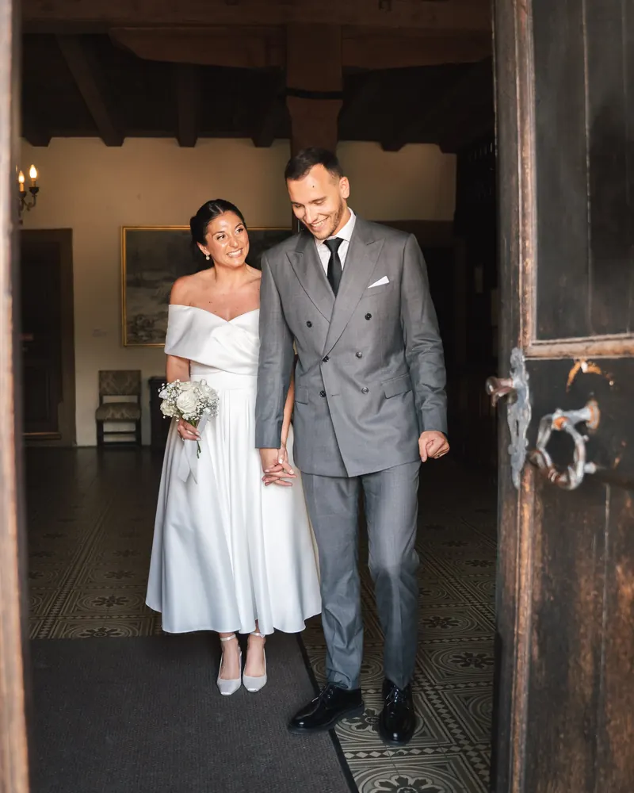
Ils m'ont fait confiance
- Basketball Champions League
- Asics
- Footpack
- SIG Strasbourg
- Volley Mulhouse Alsace
- MOC Handball
- Infowa
Plusieurs univers,un même regard
Que ce soit un match, une campagne de marque ou un mariage, je cherche la même chose : l'émotion vraie, au bon moment.
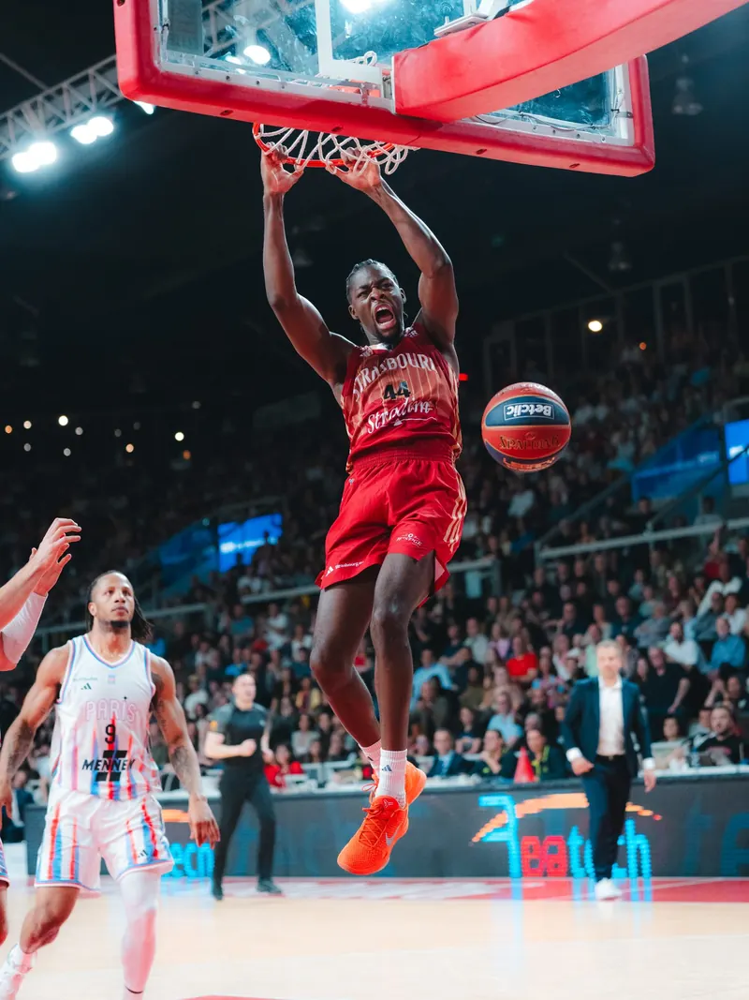
Sport →
Matchs, media days, coulisses. Handball, basket, volley, CrossFit.
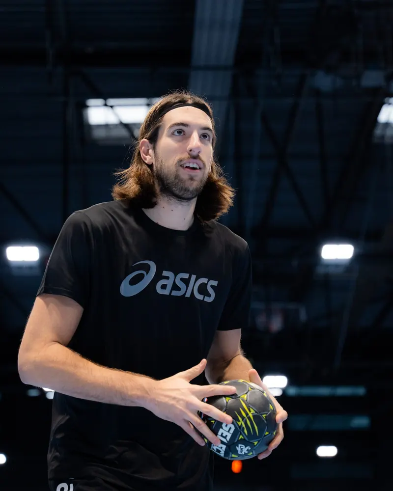
Marques & contenus →
Photo produit, campagnes, vidéos pour les réseaux sociaux.
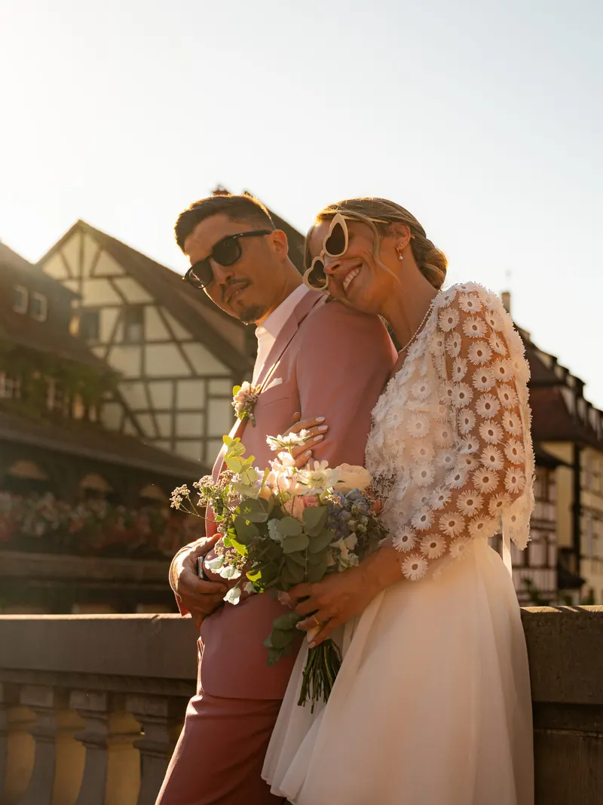
Événements & mariages →
Concerts, festivals, séminaires, mariages.
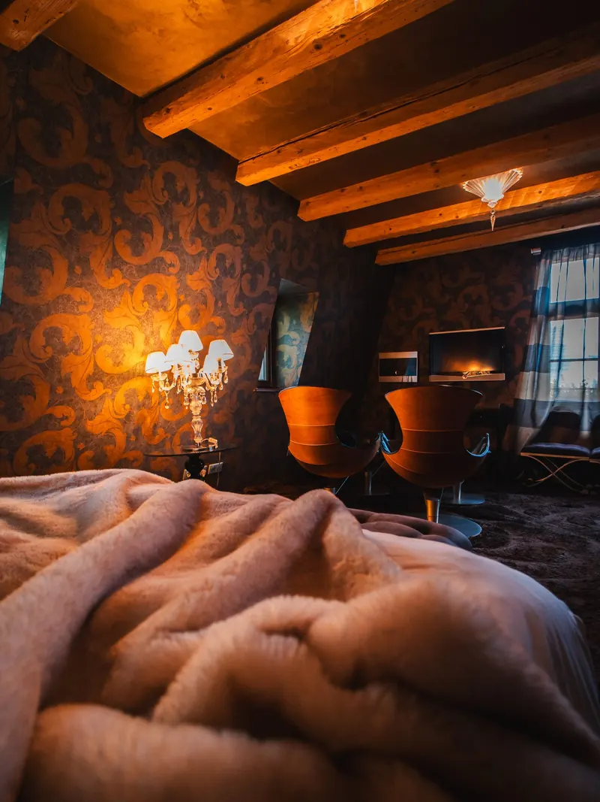
Entreprises & lieux →
Hébergements, commerces, locaux, portraits d'équipe : l'image de votre activité.
Sélection
Tous les projets →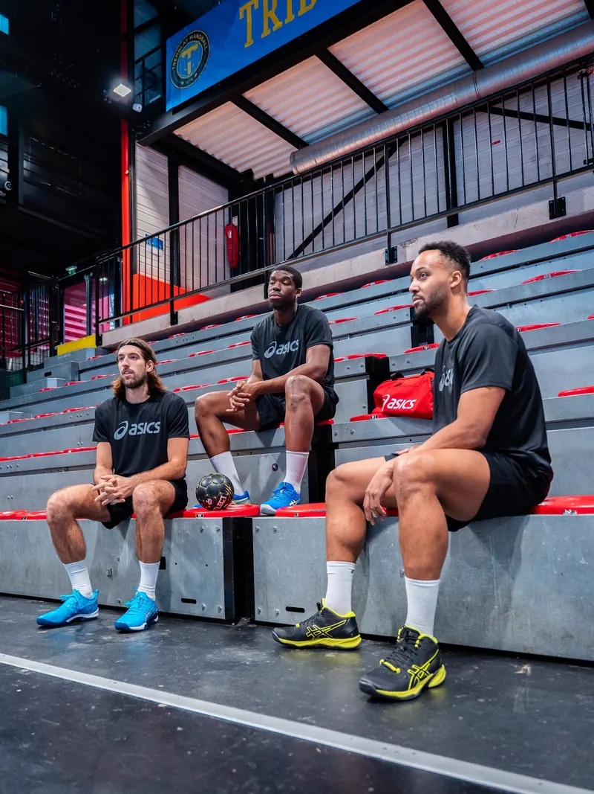
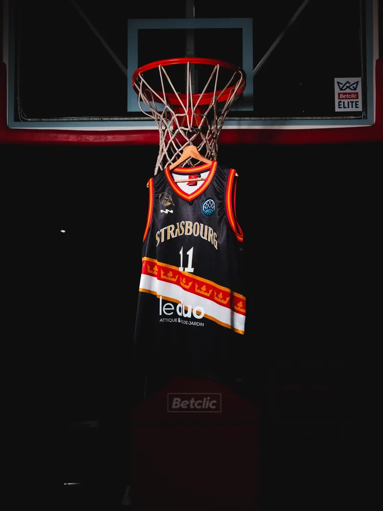
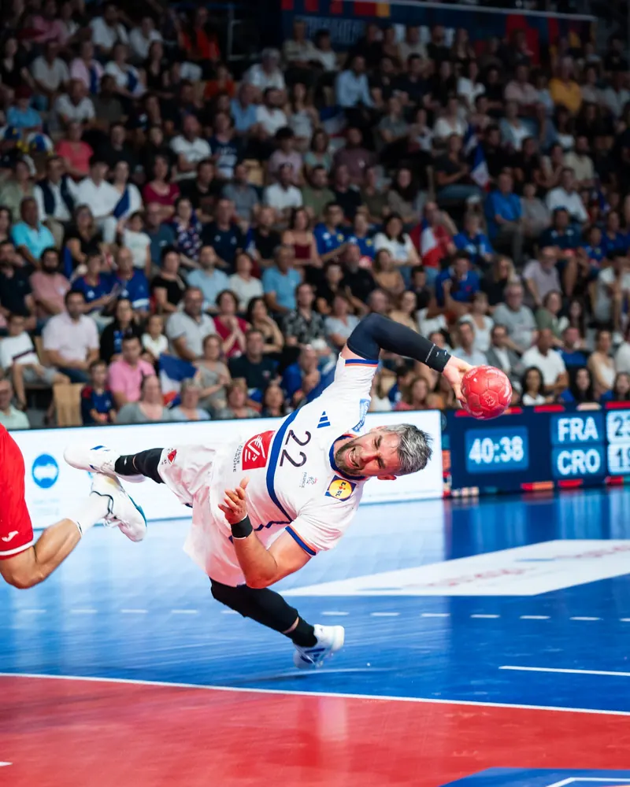
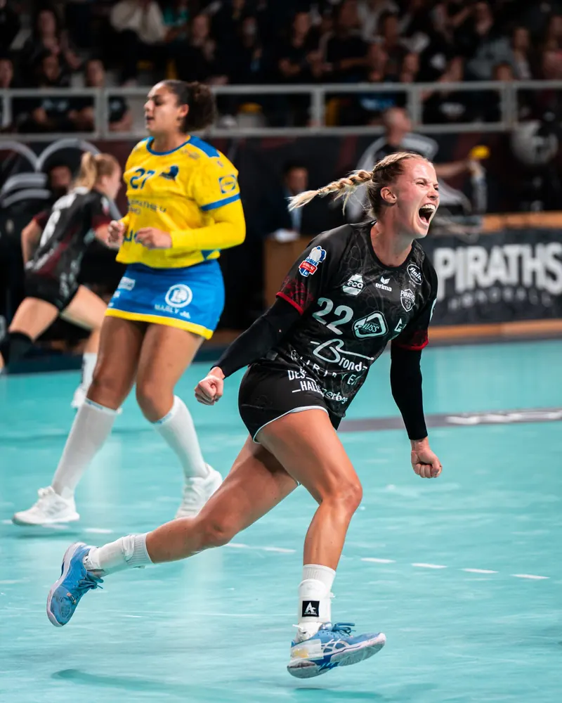
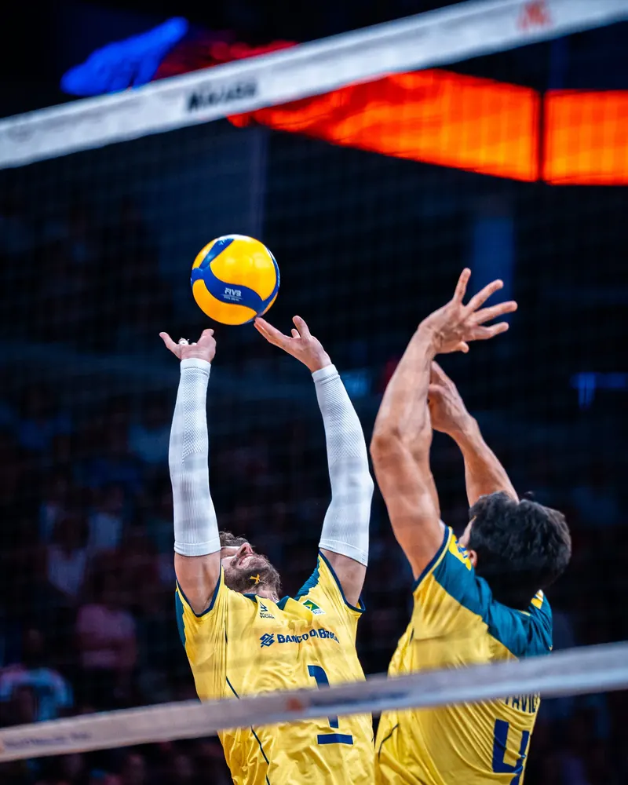
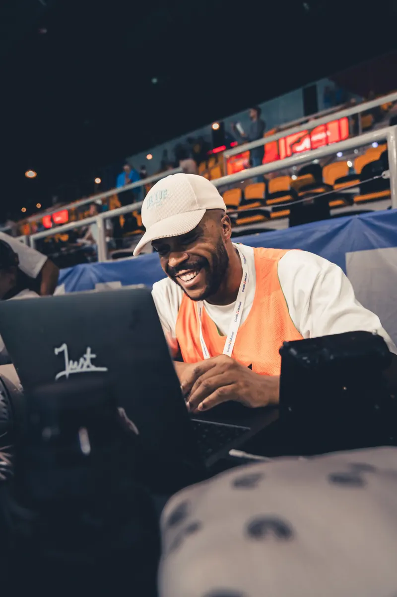
Photo : Lucas Deslangles
Du terrainà l'objectif
Je suis Steven George Baltyde. J'ai passé des années sur les parquets comme handballeur professionnel, et j'ai toujours eu un appareil photo à portée de main. C'était ma façon de profiter des instants de vie.
Le sport m'a appris à anticiper : sentir le geste avant qu'il arrive, lire l'émotion avant qu'elle éclate. C'est ce regard que j'apporte à chaque projet, qu'il s'agisse d'un match, d'une marque ou d'un mariage.
En mouvement
Mes derniers réels : matchs, contenus de marque et coulisses.
Voir tout sur Instagram →Un projet ?Parlons-en.
Basé à Sélestat, je me déplace dans tout le Grand Est et partout en France. Décrivez votre projet, je vous réponds sous 48 h.